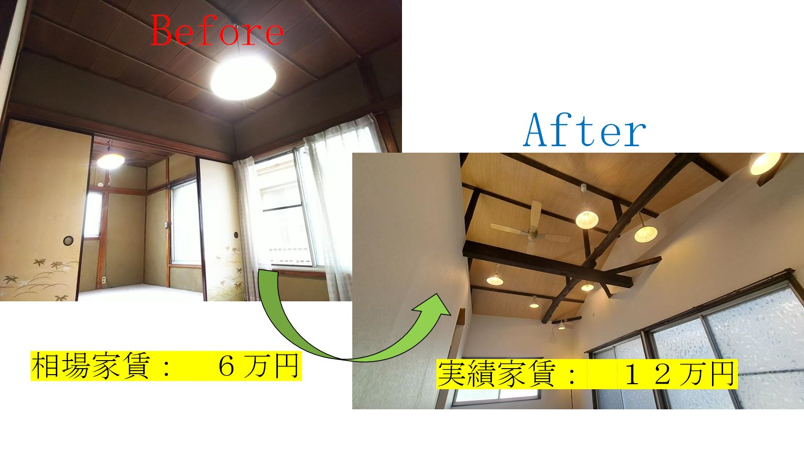
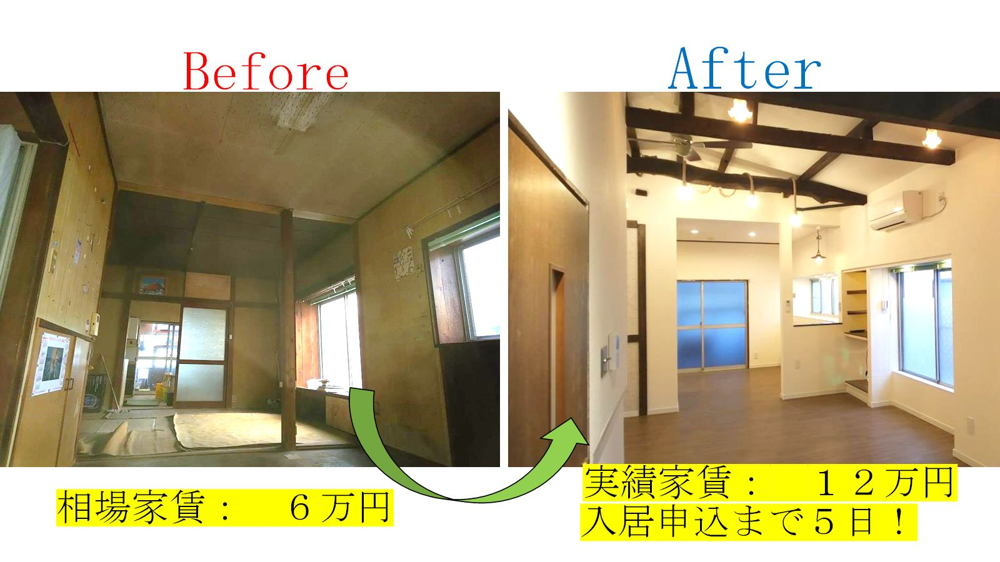

こんな人のために！
物件を購入するだけで終わらない、
リフォームや入居付、管理ノウハウまで！
それぞれの会員さんの事情に合った個別でのサポートだから安心！
当会では、不動産投資初心者の大家の方や、これから大家を目指す方々を中心に、包括的な支援を行っています。
ベテラン投資家やメガ大家など、どんな経験レベルの方でも大歓迎です。
まだ大家になっていない方でももちろんサポート致します！
ベテラン投資家やメガ大家など、どんな経験レベルの方でも大歓迎です。
まだ大家になっていない方でももちろんサポート致します！
施工事例紹介


「オープンにしたくない！秘密でやりたい！」
他の大家会に入会していたけど、質問しづらくて辞めてしまった方はいらっしゃいませんか？
なぜそんなことが生じるのか、客観視し、考えたことがあります。
それは、質問者と回答者の会話レベルがマッチしていないからです。
質問者はAまでも理解できていない。でも回答者は「Aまでは最低知ってるでしょ、Bから説明します...」というスタート。
結果、質問事項が増え、理解するまでに何度もラリーが必要に。
周囲の目も気になり、だんだん質問しづらい雰囲気が生まれてしまいます。
Shimizuコーチングの運営者は、不動産初心者の時代に同じ壁を経験してきたので、質問者の気持ちが痛いほどわかります。
短いラリーで、簡潔に、一人ひとりに合った方法で回答していくことを努めています。
短いラリーで、簡潔に、一人ひとりに合った方法で回答していくことを努めています。